Fig. 6.1 l Kolar gold mine
Resource
Utilisation and
Sustainability
6
Unit
Look at the image (Fig. 6.1) given above.
It is the oldest and largest gold mine in India. In 1804, when John Warren made a
resource map for the British government, the village of Urigam in Karnataka and its
surrounding area was found as the land of gold.
Page 87

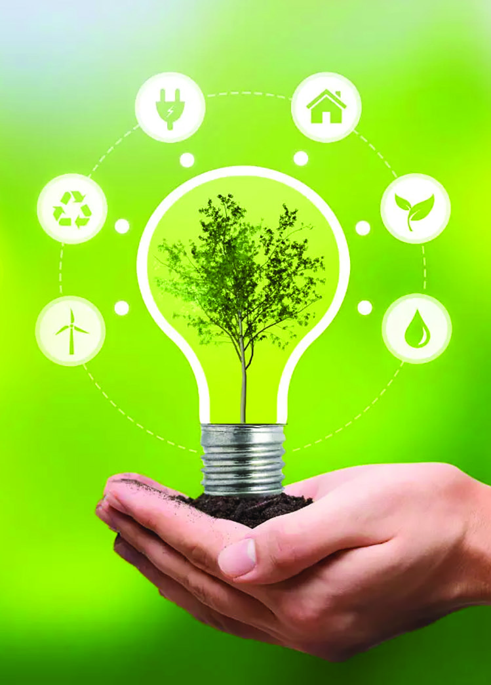
Page 88


88
Social Science
Standard
Human Resource
Humans are considered
resources as they can
create many resources
using their abilities, skills
and technology.
Yes,
of course.
Mom... Are
human beings
also resources?
l Fig. 6.2
This is renamed as K.G.F. (Kolar Gold Field). From 1880 to
1956, the Kolar Gold Field (K.G.F) produced more than 800
tonnes of gold and marked India’s place on the world gold
map. Kolar in Karnataka became one of the oldest industrial
cities in India due to its gold deposits. Do you recognise the
importance of gold in the Indian economy and the lives of
people?
For what purposes gold is being used?
l manufacturing of electronic goods
l pharmaceutical manufacturing
l
Apart from gold, can you mention other materials
used to meet the needs in our daily life?
l
l
Metals like gold, iron, silver, etc. are available from
nature. Besides, physical materials such as air, water
and soil are also used to fulfil our needs.
Anything
that
is
environmentally
available,
technologically accessible, culturally acceptable and
capable of meeting our needs is called a resource.
Resources include not only material things like
water, air and soil but also non-material things like
knowledge and health. Depending on human needs
any object can be turned into a resource with time
and technology. Likewise, human skills are also used
as resources. This is called human resource.
On the basis of origin, resources can be mainly
classified into natural resources and man-made
resources.
Page 89

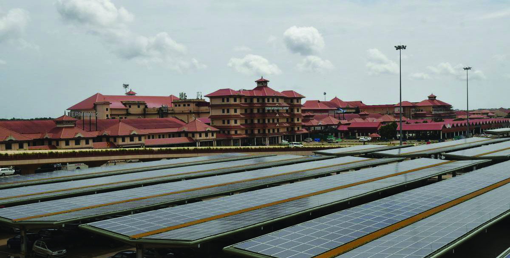
89
Resource Utilisation
and Sustainability
Resources
Natural resources
Resources obtained from nature.
E.g., air, minerals
Man-made resources
Resources made by human beings
E.g., road, machinery
Fig. 6.3 l Kochi International Airport
A fully solar-
powered airport
Kochi International
Airport is the first airport
in the world to run
entirely on solar energy.
It is the first airport
in India to be started
as a public-private
partnership initiative.
Can we use all the natural resources as we wish?
Why can’t all resources be used the same way?
l not available everywhere
l runs out with use
l
The availability and renewability of natural
resources varies. Resources can be classified
into two categories based on their renewable
potential.
1. Renewable Resources
Resources that do not get depleted after use
and can be reused are renewable resources.
These are resources that are continuously
produced in nature and are always readily
available to man. Sunlight, wind and waves
are examples of such resources.
2. Non-Renewable Resources
Non-renewable
resources
have
been
formed over millions of years and they
decrease in quantity with use. Examples of
such resources include iron, gold, coal, and
petroleum.
Page 90
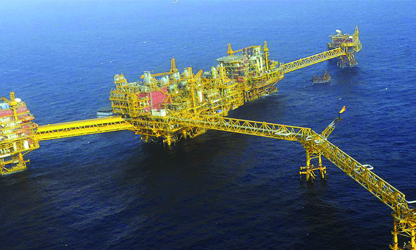


90
Social Science
Standard
Renewable
Non-Renewable
l
l
l
l
l
l
Mumbai High is a large oil field located
160 km away in the Arabian Sea. It is
one of the largest offshore oil fields in
India. Discovered in 1974, this oil field
is managed by the Oil and Natural Gas
Corporation (ONGC).
Mumbai High (Bombay High)
Fig. 6.4 l Mumbai High
Classify and list out renewable and non-renewable resources from
the above given resources.
water, metals, solar-energy, coal, wind and petroleum
In previous classes, you would have recognised that minerals
such as iron and copper have played an important role in
various stages of human development.
Such resources are non-renewable. Let us discuss resources
that influence the economy of a region.
Minerals
Minerals are naturally forming organic and inorganic
substances with chemical and physical properties. Examples
include petroleum, iron ore, and bauxite. We cannot use
these minerals directly.
Minerals found in the Earth’s crust in the form of ores
become usable only after mining and processing. Minerals
which will be mixed with impurities are mined from the
earth in raw form. This is called ore.
It is the process
of finding and
extracting valuable
materials from
the Earth’s surface
or underground.
Mining is classified
into surface mining
and underground
mining.
Mining
Page 91

91
Resource Utilisation
and Sustainability
These ores can be converted into valuable minerals only
through refining processes.
petroleum, iron ore, bauxite
Identify the minerals containing metal from the list provided.
l
l
Didn't we realise that some of the minerals contain traces
of metal? Minerals can be classified into two types based on
their composition and physical characteristics.
Metallic minerals
containing
iron
Metallic minerals
not containing
iron
Organic
minerals
Inorganic
minerals
Metallic Minerals
Non-Metallic Minerals
Minerals
Metallic Minerals
Metallic minerals are naturally occurring substances in
nature that contain traces of metal. The metal extracted
from the metallic minerals through the refining process is
usually hard and lustrous. An example of this is the extraction
of aluminium from bauxite. Metallic minerals are classified
into two types based on the presence of iron. Let us check
what their features are.
Ferrous metals
Non-ferrous metals
l appear grey
l appear in different colours
l magnetic in nature
l non-magnetic
l heavy
l relatively light weight
Page 92


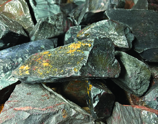

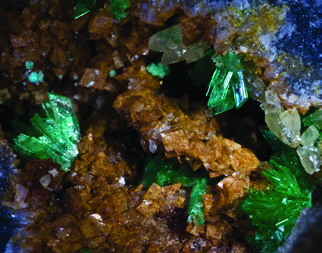

92
Social Science
Standard
lFig. 6.5
Iron Ores
Magnetite
Limonite
Hematite
Siderite
Based on the iron content, iron ore can be
classified into four-- Magnetite, Hematite,
Limonite, and Siderite. Magnetite is
called black ore. Good quality magnetite
is found in Tamil Nadu, Karnataka,
Jharkhand, Goa and Andhra Pradesh.
Identify the uses of the given metallic and non-metallic minerals and
complete the table.
Metallic minerals and uses
Non-metallic minerals and uses
l iron – construction
l graphite – pencil making
l gold -
l petrol -
l copper -
l clay -
Non-Metallic Minerals
Minerals that do not contain metals are called non-metallic
minerals. For non-metallic minerals properties such as
hardness, lustre and ductility are relatively low. Non-metallic
minerals are classified into two groups-- organic minerals and
inorganic minerals. Biominerals such as coal and petroleum
contain organic components whereas inorganic minerals
such as graphite and clay contain inorganic components.
India is rich in diverse minerals. The country’s geological
features have contributed to its mineral diversity. Minerals
are unevenly distributed in different states of India. Let us
get to know the distribution of mineral deposits in India.
Look at the map (Fig. 6.6).
Page 93
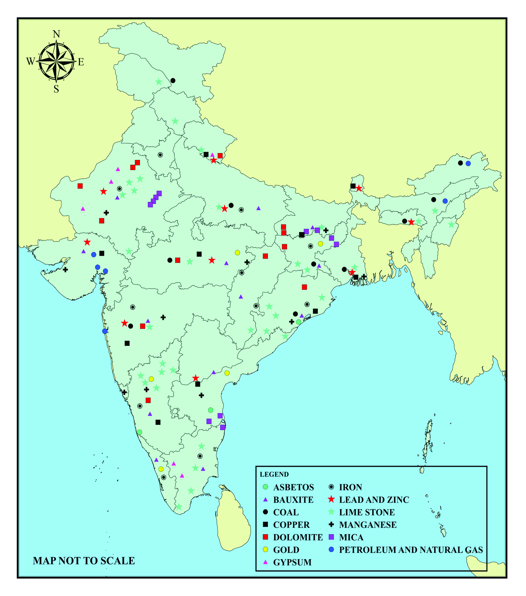
93
Resource Utilisation
and Sustainability
Fig. 6.6 l Map
INDIA
INDIA
MINERAL RESOURCES
MINERAL RESOURCES
Ladakh
Ladakh
Jammu and Kashmir
Jammu and Kashmir
Himachal Pradesh
Himachal Pradesh
Punjab
Punjab
Uttarakhand
Uttarakhand
Chandigarh
Chandigarh
Sikkim
Sikkim
Assam
Assam
Meghalaya
Meghalaya
Manipur
Manipur
Mizoram
Mizoram
Tripura
Tripura
Arunachal Pradesh
Arunachal Pradesh
Nagaland
Nagaland
Bihar
Bihar
Jharkhand
Jharkhand
Madhya Pradesh
Madhya Pradesh
Odisha
Odisha
Chhattisgarh
Chhattisgarh
Haryana
Haryana
New Delhi
New Delhi
Rajasthan
Rajasthan
Goa
Goa
Andhra Pradesh
Andhra Pradesh
Andaman and Nicobar Islands
Andaman and Nicobar Islands
Puducherry
Puducherry
Lakshadweep
Lakshadweep
Kerala
Kerala
Karnataka
Karnataka
Tamil Nadu
Tamil Nadu
Telangana
Telangana
Dadra and Nagar Haveli
Dadra and Nagar Haveli
Daman and Diu
Daman and Diu
Maharashtra
Maharashtra
Gujarat
Gujarat
Uttar Pradesh
Uttar Pradesh
Bay of Bengal
Bay of Bengal
Arabian Sea
Arabian Sea
Index
Asbestos
Bauxite
Coal
Sorghum
Dolomite
Gold
Gypsum
Iron
Lead and zinc
Limestone
Manganese
Mica
Petroleum and natural gas
MAP NOT TO SCALE
West Bengal
West Bengal
Page 94


94
Social Science
Standard
Locate in the map the major minerals and the states where they are
distributed.
Minerals
States
l Gold
l Madhya Pradesh, Andhra Pradesh, Kerala,
Karnataka and Jharkhand
l Iron
l
l Coal
l
l Manganese
l
Manufacturing Industries
Manufacturing Industries in India
We have discussed how minerals are useful for
humans. These minerals, distributed across various
states of India, play an important role in the country's
production and industrial sectors. Minerals which are
extracted through different refining processes are the
main raw materials for industries. On the basis of raw
materials, manufacturing industries can be mainly
classified as follows.
Given below is a map of major manufacturing industries
distributed across states.
E.g., Sugar
industry
E.g., Iron and
steel industry
E.g., Petroleum
industry
E.g., Paper
industry
E.g., Leather
industry
Agro-based
industry
Mineral-based
industry
Chemical
industry
Forest-based
industry
Animal-based
industry
In the manufacturing
industry, the raw
materials are processed
using machines to
make highly valuable
products for marketing
in local and distant
markets.
Manufacturing
Industry
Page 95
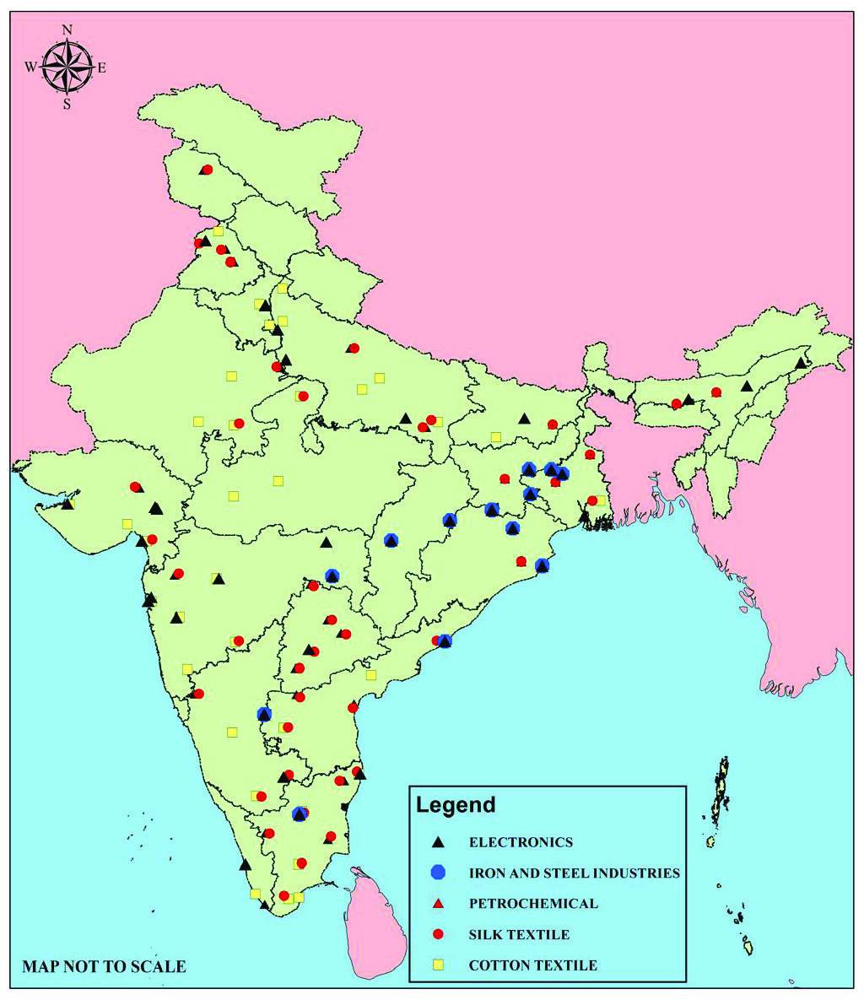

95
Resource Utilisation
and Sustainability
Look at the map and complete the given table.
Major manufacturing industries
States
l Iron-Steel Industry
l Odisha, West Bengal, Chhattisgarh
l Cotton Industry
l
l Petrochemical Industry
l
l Silk Industry
l
Ladakh
Ladakh
Jammu and Kashmir
Jammu and Kashmir
Himachal Pradesh
Himachal Pradesh
Uttarakhand
Uttarakhand
Haryana
Haryana
Rajasthan
Rajasthan
Gujarat
Gujarat
Odisha
Odisha
Uttar Pradesh
Uttar Pradesh
Jharkhand
Jharkhand
Madhya Pradesh
Madhya Pradesh
Andhra Pradesh
Andhra Pradesh
Andaman and Nicobar Islands
Andaman and Nicobar Islands
Puducherry
Puducherry
Tamil Nadu
Tamil Nadu
Karnataka
Karnataka
Lakshadweep
Lakshadweep
Maharashtra
Maharashtra
Dadra and Nagar Haveli
Dadra and Nagar Haveli
Daman and Diu
Daman and Diu
Goa
Goa
Kerala
Kerala
Telangana
Telangana
Chhattisgarh
Chhattisgarh
Bihar
Bihar
Sikkim
Sikkim
Assam
Assam
Arunachal Pradesh
Arunachal Pradesh
Nagaland
Nagaland
Manipur
Manipur
Tripura
Tripura
Mizoram
Mizoram
West Bengal
West Bengal
New Delhi
New Delhi
Punjab
Punjab
Index
Electronic Industry
Iron-steel Industry
Petrochemical Industry
Silk Industry
Cotton Industry
Chandigarh
Chandigarh
Fig. 6.7 l Map
INDIA
INDIA
MANUFACTURING INDUSTRIES
MANUFACTURING INDUSTRIES
Meghalaya
Meghalaya
Page 96


96
Social Science
Standard
‘Iron industry is the foundation of the Indian economy.’
Discuss and write notes.
A five-year plan is
a system designed
by the government
to achieve set
goals for the
economic and
social progress of
a country within
a five-year
period.
Five-Year Plan
Iron and steel
industries are
also called heavy
industries due to
the large amount
of raw materials
used and the size
and weight of the
products from
them.
Heavy Industry
Among the mineral-based industries with which we are
familiar, the iron and steel industry is the foundation of
industrial development. The iron and steel industry is
called a basic industry as it provides the raw materials
and products required for other industries. Iron and steel
industry is also known as heavy industry. India is one of
the largest producers of iron and steel in the world.
Iron and Steel Industry in India
Availability of natural and human resources plays a
decisive role in the growth of the industrial sector in
India. The extent of industrial growth of each country is
determined on the basis of iron and steel consumption.
The iron and steel industry supports the other industries
and service sectors and increases the country’s income.
In addition, by creating employment opportunities, the
standard of living of the people is also raised. In this way,
the iron and steel industry plays an important role in the
growth of the Indian economy.
Since ancient times, Indians have been well-versed in
metallurgy. The beginning of the modern iron and steel
industry in India dates back to 1907 when the Tata Iron
and Steel Company (TISCO) was established at Sakchi
(Jamshedpur). Indian Iron and Steel Company (IISCO) came
into existence in West Bengal in 1919 and Mysore Iron and
Steel (Visvesvaraya Iron and Steel) Company in Karnataka in
1923.
After independence, the iron and steel industry in India grew
rapidly. During the Second Five-Year Plan, three integrated
iron and steel projects were started at Bhilai, Rourkela and
Durgapur with the help of the Soviet Union, Germany and
Britain respectively. Later, the management and responsibility
of these were taken over by the government organisation,
Steel Authority of India Limited (SAIL). A map of major iron
and steel industries in India is given. Look at the map.
Page 97


97
Resource Utilisation
and Sustainability
In the given map, locate the iron and steel industries and the states
where they are located.
State
Iron and steel industries
l Odisha
l Rourkela, Paradweep, Kendujhargarh
l
l
l
l
l
l
l
l
Fig. 6.8 l Map
Bokaro
Bokaro
Burnpur
Burnpur
Jamshedpur
Jamshedpur
Bhilai
Bhilai
Raigarh
Raigarh
Visakhapatnam
Visakhapatnam
Ballari
Ballari
Chandrapur
Chandrapur
Paradweep
Paradweep
Rourkela
Rourkela
Kendujhargarh
Kendujhargarh
Salem
Salem
INDIA
INDIA
MAJOR IRON AND STEEL INDUSTRIES
MAJOR IRON AND STEEL INDUSTRIES
Index
Iron and Steel Plants
Iron and Steel Plants
Durgapur
Durgapur
Page 98

98
Social Science
Standard
Fig. 6.9 l Map
Factors Influencing the Distribution of
Manufacturing Industries
Geographical factors
topography
weather
water
energy
raw materials
capital
organisation
market
government policies
transportation
availability of labourers
Non-geographical factors
From the given map, you have
recognised that Odisha is the major iron
and steel industrial state of India. The
following are the reasons for the growth
of the iron and steel industry in Odisha
compared to other states of India.
Odisha’s geographical location and,
mineral and water availability have
led to the growth of the iron and steel
industry. High grade iron ore deposits
are found in Keonjhar, Sundargarh and
Mayurbhanj districts and coal in the
Talcher region. An excellent railway network and highways
connecting the factories of Rourkela and Kalinganagar with
the main markets of India facilitated industrial development.
Moreover, the long coastline and ports facilitated domestic
and international trade, making Odisha the centre of the
iron and steel industry.
Factors Influencing the Distribution of
Manufacturing Industries
Both geographical and non-geographical factors influence
the distribution of manufacturing industries.
Page 99


99
Resource Utilisation
and Sustainability
Identify the factors that influenced
the Tata Iron and Steel Plant from the
figure.
l availability of water (river)
l proximity to port (Kolkata)
l market (Kolkata, Mumbai)
l
l
l
lFig. 6.10
Soft drink industry: Water
scarcity is getting worse
Poisonous Yamuna river
One of the largest slums in the
world is situated in Mumbai City.
Smoky Delhi: People’s lives
become difficult.
Did you notice the news headlines above? What are the
problems mentioned here?
l
l
l
All these are the consequences of the manufacturing
industries. Pollution is the main aftermath.
Pollution
Pollution is the undesirable consequences on the physical,
chemical or biological characteristics of air, water and soil.
Iron and steel industries contribute to India’s economic
growth, but they also cause many social and environmental
problems.
TISCO
Page 100


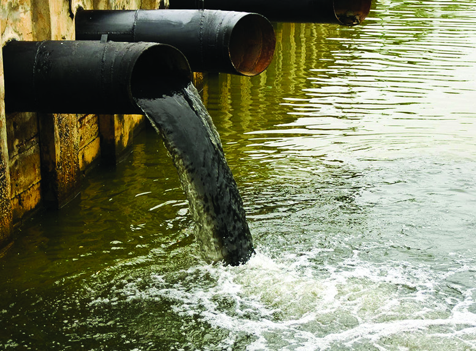
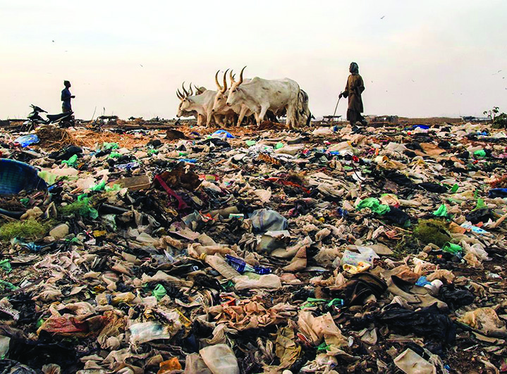

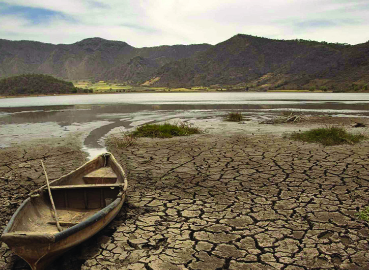
100
Social Science
Standard
Fig. 6.11 l Air Pollution
Fig. 6.12 l Water Pollution
Fig. 6.13 l Soil Pollution
Fig. 6.14 l Noise Pollution
Discuss the issues related to pollution and prepare placards, posters
and slogans to create awareness.
Fig. 6.15 l Water scarcity
Unscientific human activities cause pollution. This threatens
the sustainability of the Earth and affects the regenerative
capacity of the environment.
Various Types of Pollution
Air Pollution
The smoke emitted from industries which contain toxic
gases such as sulphur dioxide, carbon dioxide, carbon
monoxide and methane, pollute the atmosphere. This poses
a serious threat to nature and human health.
Water Pollution
Waste water discharged from industries and toxins from
chemical industries pollute rivers, lakes and other water
bodies. It harmfully affects aquatic life and humans.
Soil Pollution
The waste and e-waste emitted from industries alter the
natural structure of the soil. This has a detrimental effect on
the agricultural sector and the environment.
Noise Pollution
Excessive noise emitted from industries adversely affects the
physical and mental health of the people in the surrounding
areas.
Resource Depletion
Unscientific use of resources in industries to increase
production leads to resource depletion and environmental
problems. Examples include deforestation, loss of soil
fertility, and depletion of water and mineral resources.
Page 101
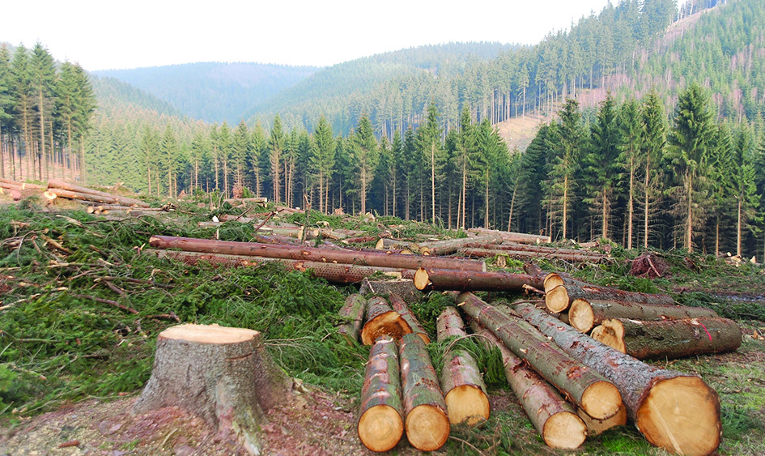
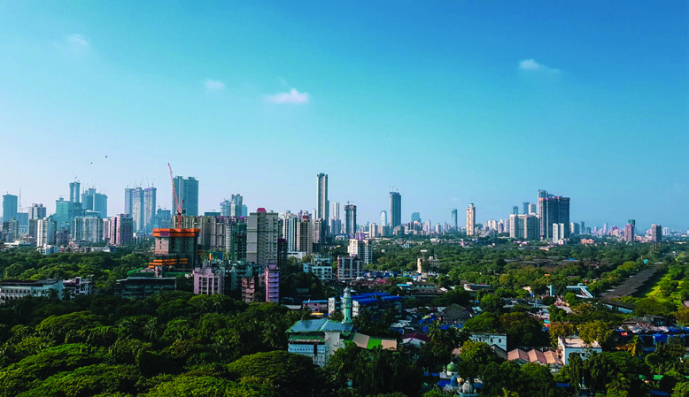
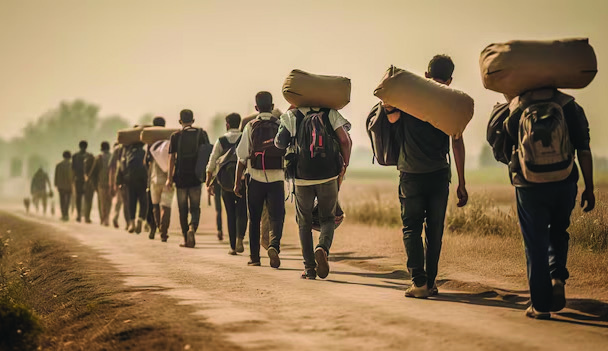


101
Resource Utilisation
and Sustainability
Regional Inequality
The unbalanced distribution of natural resources
and inadequate basic facilities have resulted in
a concentration of industrial development in
certain regions. Differences can be seen in the
income and living standards of the people in these
areas. This causes regional disparity in industrially
backward areas.
Migration
Migration is the permanent or temporary movement
of people from one region to another. People
migrate from less developed areas to developed
industrial areas for employment and better living
conditions. As a result of this, population density
increases in this area.
Urbanisation
Urbanisation is the increase in size and population
of cities as a result of migration from rural areas
to urban areas and natural population growth in
cities. This has led to a massive increase in the
size and population of cities and it results in socio-
economic and environmental changes.
Fig. 6.16 l Deforestation
Fig. 6.18 l Urbanisation
Fig. 6.17 l Migration
lFig. 6.19
Organise a debate on ‘Manufacturing Industries:
Prospects and Constraints.’
Didn't you realise that resource depletion is one of the most
important of the many problems created by industries?
Resource conservation can be achieved through scientific
resource management.
Conservation of Resources
Conservation of resources is the process of ensuring their
availability by avoiding over-exploitation through judicious
use. The objectives of conservation of resources are to
conserve resources for future generations, maintain the
Page 102

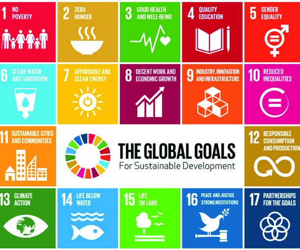

102
Social Science
Standard
balance of the environment, and minimise impacts on nature
and human beings.
Let us learn about the main resource conservation methods.
l recycling of resources
l water conservation
l energy conservation
l forest conservation
l
l
Discuss in different groups the various activities that you can do in
school to conserve resources and prepare a concept map and present it.
lFig. 6.20
The concept of resource conservation is to prevent the
depletion of natural resources and ensure their availability
for future generations. Currently, sustainable development
is an important policy followed by the countries of the world
to conserve resources.
Sustainable Development
Sustainable development aims to meet the needs of
the present without compromising the ability of future
generations to meet their own needs. Economic
growth can be achieved through a balance between the
welfare of the environment and the standard of living
of the people. Recycling, reducing usage, and reusing
resources are ways to achieve sustainable development.
The Sustainable Development Goals are a collection of
seventeen goals proposed by the United Nations in 2015 to
achieve them by 2030.
Extended Activities
l Collect pictures of important minerals and prepare an album.
l Organise an awareness class in your area about pollution.
l Prepare a digital magazine on the conservation of resources.
l Organise an awareness class on sustainable development in your area.
l Prepare and include a map of India’s mineral resources and manufacturing
industries in 'My own atlas.'